Buzz Boxes
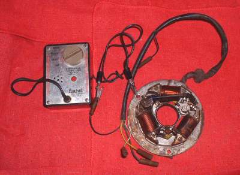
and what profit hath he that hath laboured for the wind?
Ecclesiastes 5:16
¶ Back in the day, from the first time motorcycles were produced, the spark was triggered by a set of points. In 1980 everything started to change. Yes, before 1980 there were electronic ignition systems and after 1980 there were points ignition system but, for all intensive purposes, points ignition systems ended in 1980. So perhaps I am laboring for the wind in that what I am going to tell you is 35 year old, dated news. Still, it may help some of you time your old points Magneto ignitioned motorcycle.
When you time points in a battery coil ignition you can use a circuit tester light, know exactly when the points open and be very accurate in your timing. Not so in a Points Magneto ignition. The reason is because the points are always grounded in a Points Magneto. That is the bad news. The good news is the points change the resistance in the wire and that resistance change can be recognized with a Buzz Box, so you can know exactly when your points open and your spark occurs. If you are not understanding why this is important go read the Magneto timing page HERE.
To hook up a Buzz Box you simply attach one clip to ground and the other to the points wire which is usually a black wire or a black wire with a white stripe or some other color wire. Whatever color wire it is, it is the wire going from the points to the ignition coil. Attach the Buzz Box and turn it on. With the points closed, it will make a buzzing sound hence the name Buzz Box. If you open the points the buzzing sound will change tone just as they open. The tone changes sometimes a little and sometimes a lot. This tone change is when the spark occurs, at the spark plug, firing off the fuel/air mixture in the engine.
Here are some audio and video files that illustrate what is happening. They are all the same, just different formats.
Nowadays a ready made Buzz Box costs over Fifty dollars. A bit much for one or two jobs don't you think? Below are a set of plans from 1975 for making your own Buzz Box.
Here are the same plans as a PDF file you can download and print them out. Buzz Box plans 9,668 KB
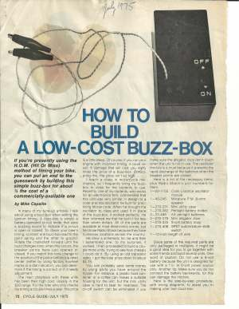 Page 1 |
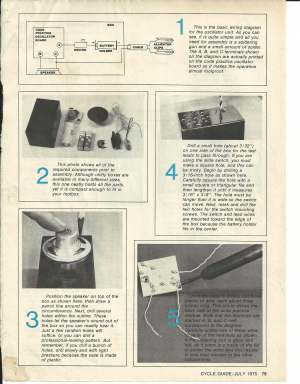 Page 2 |
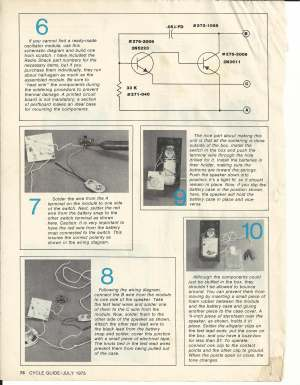 Page 3 |
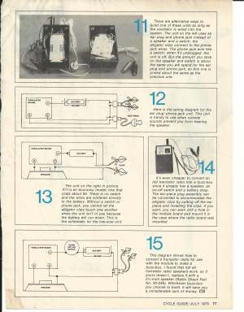 Page 4 |
Here are some more Buzz Box plans I found in my files.
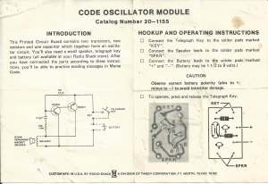 Buzz Box Plans 1 |
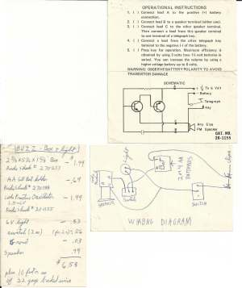 Buzz Box Plans 2 |
Back in the day some people claimed you could use a Transistor radio too. You just have to find the right spot with the radio station tuning dial and run some low voltage through the points. A real pain in the rear as I remember, especially as there are better cheap ways to do it.
OK, story time. I'm in my college dorm room with my room mate sitting at his desk and I am lying on my bed trying to sleep. He has his radio on. He had to have his music. Most irritating. Had no taste in music. Unbeknown to him, I had discovered my cheap junky radio had a hidden talent. At the far end of the tuning dial was a magical spot. If I turned the radio on, with the sound at the lowest setting, and moved the tuning dial just a bit at the far end of the tuning range my room mate's radio would go wee, ooo, waaa, wee.
He would then adjust his dial and it would go away. I was laying there with my eyes closed and my hand lying on my radio, seemingly asleep. I would very slowly move the dial again. Wee, ooo, waaa, wee, went his radio. He would adjust it again. A minute later more wee, ooo, waa, wee. What fun and yes, sad to say, I do have a mean streak in me. Well, after twenty minutes of fun, my room mate finally turned his radio off and I finally got to sleep. You got to love cheap late 1960s radios.
|
Just a thought, do you remember Transistor Radios? I sure do. I had a Two Transistor Radio. If you could afford it, you got a Six Transistor Radio which was much better. Alas, I was poor and could only afford a two transistor one. It had a little 1/4" diameter antenna. It was a collapsible type that could extend to around twenty-five to thirty inches in length. It worked much better then my Crystal Radio. As I remember little Transistor Radios were very popular back in the day. It was very hard to look "Cool" with a thirty inch Antenna sticking above your head but we did it. Anything to have our "Vibes"! Want to make a Crystal Radio? Go HERE Or HERE for free plans. 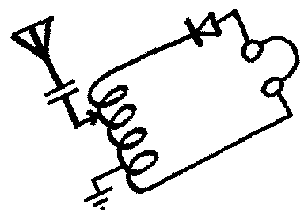 |
OK, so we need something that will work and we need it RIGHT NOW! No time to build something. Well, there is a way out. That way out is a lowly Ohmmeter. This is all loose and gooey. The internal resistance of the Ohmmeter is about .9 Ohms so the real resistance is about 1.4 Ohms. That is not very much. Your results may vary. Up down, who knows. The big thing to remember is that when the reading changes is when the points open.
Here are some video files that illustrate what the Ohmmeter is doing. They are the same, just different formats. Or you can watch the Video online Here
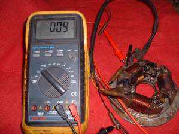 Points Closed |
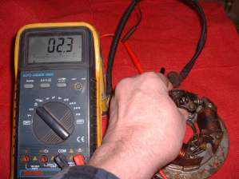 Points Open |
"OK, that is nice" you say, "but haven't you noticed? The economy is down and I am POOR. I no gots a big fancy Ohmmeter. What do I do now?" No problem, Go bum a cigarette, throw the tobacco and filter away and cut the cigarette paper into long stripes. Now put one end between the points as you turn the flywheel gently pull on the cigarette paper. When the paper comes out the points are just opening. This is very accurate and it is very cheap.

Like Red Green says "Any tool can be the right tool."
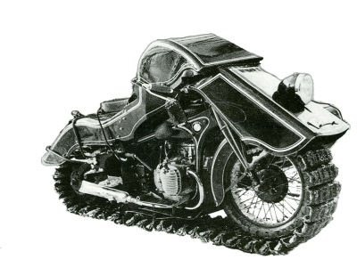 |
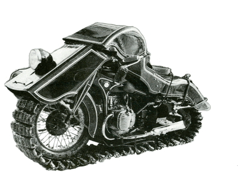 |